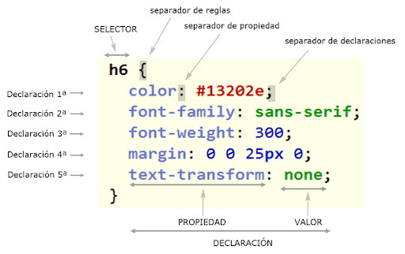
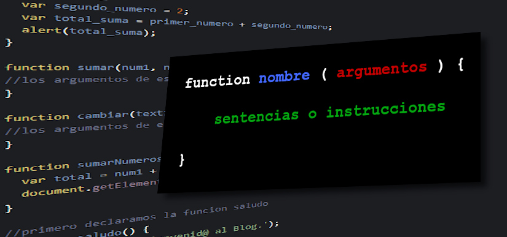

Benvinguts a la web de Vicenç
Aquesta és la web de de la optativa de robotica de 3r d'ESO feta a l'institut Pompeu Fabra de Martorell
El primer projecte es pel Dia Mundial de la Poesia de la UNESCO que sera el 21 de merç del 2026.
L'objectiu del primer projecte es fer un robot poeta. Necessitarem aprendere tres llenguatges:
HTML:
Llenguatges de Marques de HiperText, utilitza marques com per exemple <p> per crear paragraf, <ul> per crear llistes desordenades, <ol> per crear llistes ordenades. Per pssar imatges escrivim <mg scr=" ">. També permet posar audios,vídeos o fer taules.CSS:
Full d'estils en cascada: Dona forma al html anterior, permet triar el tipus de lletra, el color de la mateixa, el color del fons, els marges i tot l'estil de la pàgina. Sempre s'escriu aquesta estructura: marca{propietat1:valor1;propietat2:valor2}.JAVASCRIPT:
Permet el codi interactiu i tot el comportament de la pàgina.


